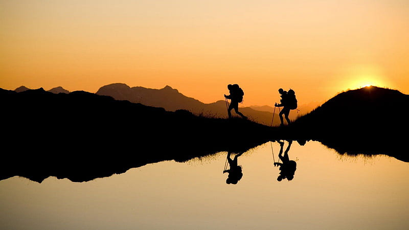
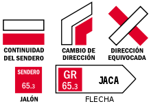

¿Qué es el senderismo?

Senderismo es sinónimo de excursionismo a pie, es decir, caminatas que se realizan principalmente por senderos y caminos. El grado de dificultad no suele ser alto. Es una mezcla de actividad deportiva y turística, que se desarrolla principalmente en entornos naturales.
El senderismo es un deporte en la naturaleza que por su sencillez, ausencia de riesgo y bajo coste económico es una actividad muy adecuada para amplios segmentos de la población.
Tradicionalmente esta actividad era realizada por los Centros Excursionistas, pero hoy en día, gracias a los senderos señalizados, es posible realizar todo tipo de caminatas de cualquier nivel, y en cualquier destino, tanto por cuenta propia como organizado por empresas de guías o interpretativos del medio natural.
Dificultad
- Fácil: senderos.
- Moderado: caminos estrechos e irregulares, con piedras y deslizante.
- Difícil: camino rocoso, pasos aéreos, requiere gatear.
Senderismo es la manera más fácil de practicar deporte en contacto con la naturaleza.
Como actividad turística, el hecho de poder acercarse al medio natural, al patrimonio, a la historia y a la cultura lentamente, nos permite realizar lo que ahora se denomina 'slow travel'. La Comisión Europea, en el informe LEADER de 2001, ya apoyaba el senderismo como producto turístico para fomentar el desarrollo local de zonas rurales, mediante la creación de productos guiados y autoguiados.
Senderos homologados
Un sendero es un camino en plena naturaleza que puede ser utilizado por cualquier persona, sin necesidad de poseer una forma física especial, ni de tener conocimientos especiales de orientación o topografía.
El senderismo se ha popularizado en los últimos años gracias a la homologación, señalización y conservación de senderos realizadas por las federaciones excursionistas y montañistas de toda Europa.
En España existen mas de 60.000 km de senderos homologados, que se subdividen en GR (Gran Recorrido), PR (Pequeño Recorrido) y SL (Senderos Locales). La señalización de estos senderos se suelen pintar sobre troncos de árboles, piedras o sobre soportes específicos. Existen diversas variantes de estas marcas para indicar continuidad, cambio de dirección o dirección equivocada.
- Un Sendero de Gran Recorrido G.R. suele tener una longitud mayor de 50 km. y está pensado para caminatas de más de dos jornadas. Están señalizados mediante una raya blanca sobre otra roja. Muchos de ellos pueden formar parte de otra red mayor, por ejemplo los Senderos Europeos de Gran Recorrido.
- Un Sendero de Pequeño Recorrido P.R. tiene una distancia entre los 10 y los 50 km. Se tarda una o dos jornadas en recorrerlos. Están señalizados con marcas horizontales de pintura blanca y amarilla.
- Un Sendero Local S.L. tiene menos de 10 kilómetros de longitud y una dificultad fácil o muy fácil. Está señalizado con marca blanca y verde. Suelen consistir normalmente en un corto paseo circular por los alrededores de una población.
En las webs de las diferentes federaciones de montañismo se puede encontrar la lista de todos los senderos homologados.

Equipamiento
Conviene ir equipado con un calzado cómodo, de suela dura. La ropa ideal sea por capas, y no olvidarse de llevar comida y bebida (1 litro y medio de agua por día). Los bastones, aunque no imprescindibles, permiten descargar las rodillas.
"La realidad es que se puede disfrutar del mundo en cada pequeño rincón que tenemos a la vuelta de la esquina."